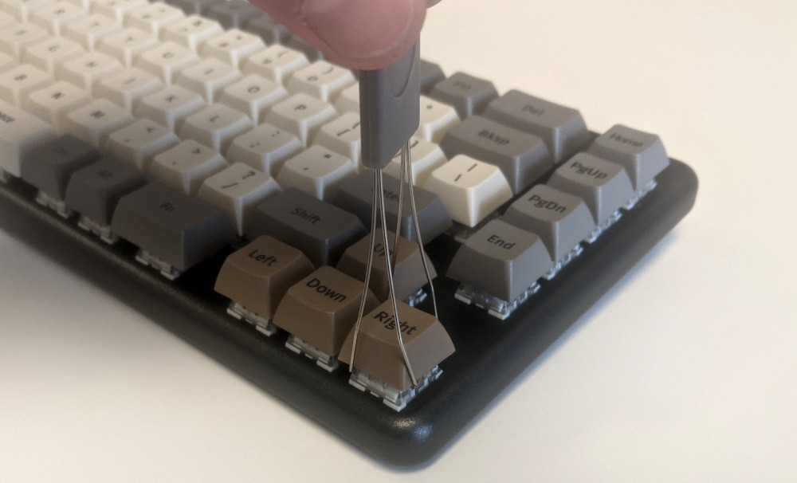
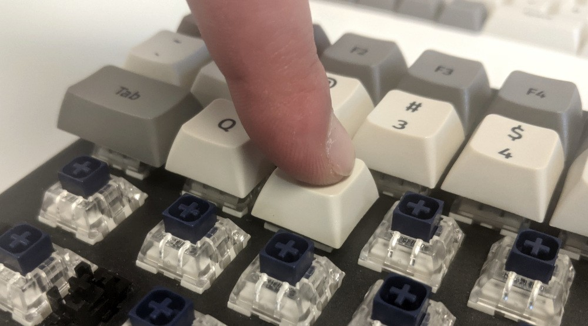
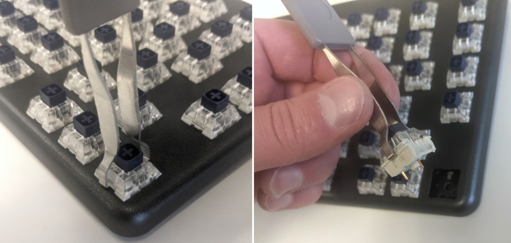
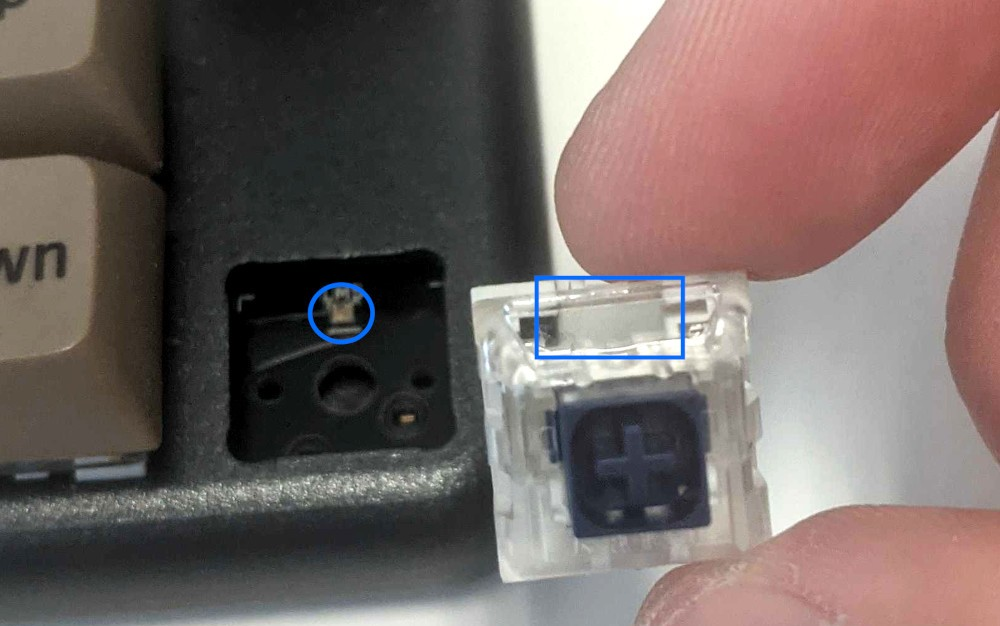
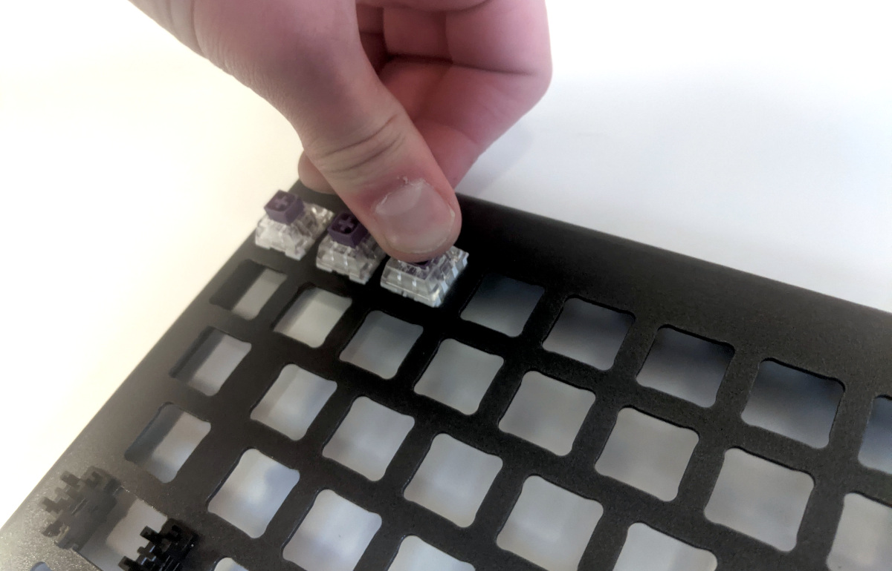
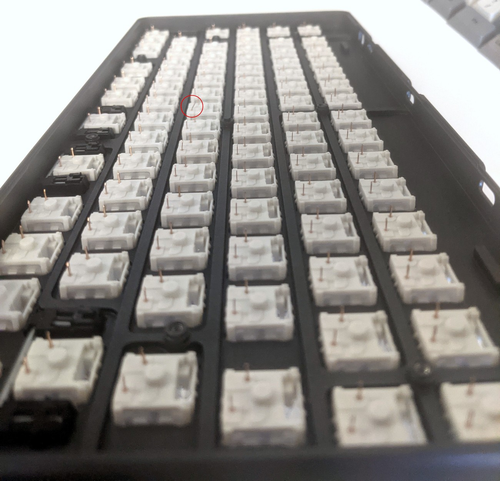

Launch (Customization & Repairs)
The Launch Configurable Keyboard can be customized and personalized in a variety of ways. It is recommended to unplug all USB cables and devices from your Launch before changing keycaps or switches.
- Connecting and using Launch
- Removing and installing keycaps
- Removing and installing switches
- Removing the PCB
Connecting and using Launch:

- Connect the USB-C side of either the USB-C/USB-C or USB-C/USB-A cable to the Launch's center USB-C port, shown above.
- Connect the other side of the cable to your computer.
- Connect any other USB devices to the four downstream USB ports on either side of the Launch.
Removing and installing keycaps:
Launch uses only three sizes of uniform profile keycaps, which allows for a high degree of customization. Any two keycaps of the same size can be swapped on the keyboard, and several extras are included in the box.
Tools required: Keycap puller
Time estimate: 20 minutes (to replace all keycaps)
Difficulty: Easy ●
Steps to remove a keycap:
- Separate the two wire loops of the keycap puller and place them around two opposite corners of the keycap to be removed.
- Pull slowly but firmly on the keycap until it slides off the switch's stem.

Notes about removing larger keycaps:
- The included keycap puller works on all three of Launch's keycap sizes.
- The three 2U keycaps (both space bars and left shift) have stabilizers, so be sure to pull both sides evenly.
- These 2U keycaps take slightly more pulling force than the rest of the keycaps.

Steps to install a keycap:
- Position the keycap on the switch.
- Press the keycap down firmly until it's fully on the switch. The cap will friction-fit onto the switch stem.
- The 2U keycaps with stabilizers require slightly more pressure to install.

Removing and installing switches:
Since Launch uses Kailh hot swap sockets, key switches can be removed and installed without soldering.
If you are changing all of the switches in your Launch, it is recommended to completely remove the PCB, install the switches into the top case without the PCB, then install the PCB into the case and onto the switch pins. This makes switch installation easier and makes bending switch pins or damaging the PCB much less likely.
If you are installing new switches, ensure that the switches you're installing are compatible with surface-mount (SMD) LEDs.
Tools required: MX-style switch puller
Time estimate: ~1 minute per switch
Difficulty: Medium ●
Steps to remove a switch:
- Remove the keycap on the switch you wish to remove.
- Place the two tongs of the switch removal tool into the switch's locking tabs on the top and bottom edges of the switch.
- The hooks should squeeze the white tabs inwards and hook under the switch's clear plastic top housing.
- Slightly pinch the tongs together to help release the switch's locking clips from the cutout in the top case.
- Pull the switch upwards out of the socket.
- The switch's locking tabs can sometimes bind on the edges of the top case. If the switch feels stuck, remove the tool and press the switch back down into place, then try removing it again.
- Switches take more force to remove than keycaps.

Steps to install a switch:
- Make sure the switch's pins are straight.
- The pins must plug into the socket, and they'll miss their slots if they are bent.

- Orient the switch so the clear LED shine-through window aligns with the LED on the PCB, near the top of the socket.

- Place the switch straight into the plate.
- Caution: Forcing the pins into the hot swap socket could damage the PCB.
- You should be able to feel whether the pins are plugging into the socket correctly.
- If you feel excessive resistance, pull the switch out, double-check that the pins are straight, and try installing the switch again.
- Once you feel the pins plug into the hot swap socket, press the switch down with more force to snap it into place within the chassis.

Removing the PCB:
Tools required: Keycap puller, MX-style switch puller, and cross-head (Phillips) screwdriver
Time estimate: 50 minutes
Difficulty: High ●
If the PCB in your Launch becomes damaged and needs to be replaced, or if you are changing all of the switches on the PCB, it can be removed and replaced using these instructions.
Steps to remove the PCB:
- Remove all of the keycaps and all of the switches.
- Turn the keyboard over and remove the eight bottom panel screws.
- Remove the bottom panel.
- Lifting the bottom panel out of the chassis may be easier with the magnetic lift bar installed.

- Push the PCB up out of the chassis through one of the switch holes, then lift the PCB out of the chassis.

Steps to install the PCB:
- Install all of the switches into the chassis.
- Installing switches with the PCB removed is much easier since you don't have to worry about aligning the pins individually.

- Turn the chassis over and check that all of the switch pins are straight.
- Look down the rows of pins from the sides of the chassis to identify any bent pins.
- If any of the pins are bent when installing the PCB, the switch or the PCB may be damaged.
- In the image below, the pin highlighted red is an example of a pin that is bent and needs to be straightened.

- Carefully line up the PCB with the switch pins and place it in the chassis.
- It may be easiest to insert the top edge first since the USB-C ports need to align with the port cutouts in the chassis.
- If all of the switch pins feel lined up, press the PCB down little by little until all of the switch pins are fully seated in their sockets.
- The switch pins can be seen coming up through the sockets when they are fully seated (circled in green below).

- Install the bottom cover and its eight screws, flip the keyboard over, and put all of the keycaps back on.